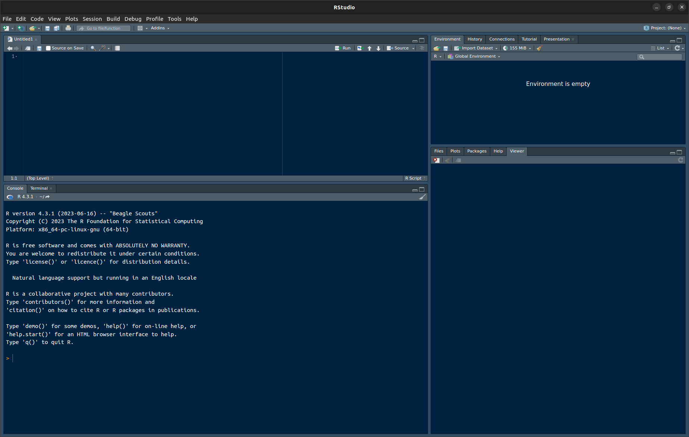

1 Installing and configuring R and RStudio
1.1 Goals
- You’ll install the software you’ll need for this part of the class:
R,RStudio, andtidyverse/ggplot2. - You’ll tinker with the
RandRStudiosettings. - You’ll draw and save your first graph, a scatterplot, to see if everything is working as it should be.
1.2 Software
- Download the free program
Rfrom https://r-project.org (Download, CRAN) and install it. In case you already had R installed before taking this course, please check that you have at least version 4.3.1. (This site was last compiled using R version 4.6.1.) - Download and install the free program
RStudio: https://posit.co/products/open-source/rstudio/. Pick the free desktop version. RStudio offers a tidier user interface forR. - Open
RStudio. You should see four frames as in Figure 1.1 below, though perhaps with a different colour scheme. If you see only one frame on the left-hand side, clickFile > New File > R Script.

Figure 1.1: RStudio. Top left: Script editor. This is where you can enter and edit commands and comments. Bottom left: R console. Commands that you copy from the script editor to this console will be evaluated by R. Top right: Here you’ll find a list of the objects currently available in R’s working memory (none at the moment). Bottom right: Plots (none at the moment), help pages etc.
Go to
Tools > Global Options... > General.UntickRestore .RData into workspace at startupand setSave workspace to .RData on exittoNever. This way, you’ll start with a clean slate each time you restartR, i.e., there won’t be any objects in the workspace from a previous session that could affect your computations in the current session. This, in turn, will help ensure that when other people run the same code as you, the results will be the same, too.Go to
Tools > Global Options...> Code > Saving. SetDefault text encodingtoUTF-8.Go to
Tools > Global Options...> Code > Editing. TickUse native pipe operator. |>.Enter the following line into the script editor (top left). Brackets, quotation marks, capitalisation, and the like all matter to computers, so pay attention to them.
Now put the cursor on this line in the script editor. Then click
Code > Run Line(s). Alternatively, you can use the shortcut ctrl + enter (Windows and Linux) or command + enter (Mac). This relays the commandinstall.packages("tidyverse")toR. This command adds thetidyversesuite to your installation of R. Thetidyverseis a collection of useful add-ons that enable you to work more flexibly and more efficiently with datasets. One of these add-ons is theggplot2package, which features state-of-the-art functions for drawing graphics.You may need to select a server from a pop-up window. Any server should work.
Wait as the add-on package is being installed.
Install the
herepackage using the same set of commands, i.e., run the line below. Theherepackage facilitates working in a directory structure.
Do the same with the
devtoolspackage.Click on
File > New Project... > New Directory. Navigate to somewhere on your computer where you want to create a new directory and give this directory a name (for instance,quantmeth_plots). You will use this directory to store the data and scripts that you’ll need for drawing the graphs in as well for saving the graphs themselves to. You don’t have to tick the other options.When you’re done, close RStudio. Navigate to the directory you’ve just created. You should find an
.Rprojfile there. Double-click it. If all is well, RStudio should fire up.Create the following subdirectories in the directory you’re currently in:
data,scriptsandfigures.
Now we’re good to go!
1.3 Drawing a first scatterplot
I’ll assume that you’ve opened your newly created R project.
If you haven’t, navigate to the directory you’ve just created and double-click
the .Rproj file.
Enter the commands below into the script editor (top left); do not enter them directly into the console (bottom left). While nothing terrible will happen if you do enter commands directly into the console, entering them into the script editor first is a good habit to get into: it’s much easier to spot errors, document your analysis, make tweaks to your code, and reuse old code in the editor than in the console.
As for documenting your analysis,
be sure to comment your R scripts.
When you’re still starting out learning R,
I suggest you use comments to
keep track of pretty much every command.
Once you’ve gained some more familiarity with R,
you’ll be better able to make sense of what a line
of R code accomplishes and your comments may become
sparser.
You can enter comments by prefixing a line with #.
Everything on the same line after # will be ignored by R
but will be visible to you and other people you’d like to share
your scripts with (e.g., when asking for help).
- After you’ve installed the
tidyversesuite and thehereanddevtoolspackages, you still need to load them in order to make their functions available. While you only need to install a package or suite once, you need to load its functions every time you start a new session. When you run this command, a number of messages will appear about packages that were attached and ‘conflicts’. You can safely ignore these. Loading theherepackage should make the current path appear at the prompt.
# Load tidyverse and here packages
# (Anything prefaced with a hash serves as a comment.)
library(tidyverse)## ── Attaching core tidyverse packages ─────────────
## ✔ dplyr 1.2.1 ✔ readr 2.2.0
## ✔ forcats 1.0.1 ✔ stringr 1.6.0
## ✔ ggplot2 4.0.3 ✔ tibble 3.3.1
## ✔ lubridate 1.9.5 ✔ tidyr 1.3.2
## ✔ purrr 1.2.2
## ── Conflicts ──────────── tidyverse_conflicts() ──
## ✖ dplyr::filter() masks stats::filter()
## ✖ dplyr::lag() masks stats::lag()
## ℹ Use the conflicted package (<http://conflicted.r-lib.org/>) to force all conflicts to become errors## here() starts at C:/Users/VanhoveJ/switchdrive/QuantMeth_GraphsRcomes with a number of pre-installed datasets, among which theirisdataset. This dataset contains measurements of 150 flowers. (Later we’ll work with linguistic datasets.) Load this pre-installed dataset usingdata():
- Display this dataset by entering its name. Take note of how this dataset
is laid out: it contains measurements of 150 flowers, with each flower
being represented by one row. For each flower, 5 pieces of information (‘variables’)
are available, among which 4 numeric ones (
Sepal.Length,Sepal.Width,Petal.Length,Petal.Width) and one non-numeric (Species). Datasets constructed in this way (1 row per observation, different columns per variable) tend to be easier to analyse than datasets with other lay-outs (e.g., one row per variable, different columns for separate observations).
- Draw a scatterplot using the following command,
which plots the flowers’
Sepal.Lengthalong the x axis and theirPetal.Lengthalong the y axis. Pay particular attention to the brackets, commas, pluses, capitalisation, etc.: The command won’t work if you typepetal.lengthinstead ofPetal.Lengthor if you forget a bracket or the plus sign. The indentations aren’t important, but they’re useful to show the command’s structure. Emulate the coding style of this tutorial as best you can.
Explanation: Line 1 specifies the name of the dataset as it’s known
in R (data =).
Lines 2–4 specify the variables to be plotted
(the plot’s aesthetics, aes) and how they should be plotted:
the variable Sepal.Length gets mapped onto the x axis,
the variable Petal.Length onto the y axis,
and the variable Species (a non-numeric variable) is colour-coded.
Line 5 specifies that the data should be plotted as points.
ggplot(data = iris, # Specify name of dataset
aes(x = Sepal.Length, # Variable for x axis (aes = 'aesthetics')
y = Petal.Length, # Variable for y axis
colour = Species)) + # Variable to map onto colour (don't forget '+'!)
geom_point() # Plot data as points
Note, incidentally, that the graph reveals that the different species
are fairly distinct from one another; especially setosa flowers look
markedly different from the other two.
Further, Sepal.Length and Petal.Length seem to be positively correlated
in versicolor and virginica flowers, but not so much in setosa flowers.
- If you’ve successfully run the commands above, you should see a graph displayed
in the bottom right pane. Now save this figure to your computer using the
following command. The figure will be saved in the subdirectory
figures, and it will be a.pngfile. Other formats, e.g.,.jpg,.pdf,.bmp,.svgwill also work.
For those already familiar with R: ggsave() only works for saving the last figure
drawn using ggplot(); it won’t work for figures drawn in base R.
- Add the following lines. They output the R, RStudio and package versions used as well as some additional information that can be useful when figuring out why something isn’t working as it should.
- Click
File > Compile Report.... Select HTML and store the script in thescriptsdirectory as01_first_scatterplot.R. If you’ve followed this tutorial to the letter, you will now find both an.Rfile and a corresponding.htmlfile in your script directory. The.Rfile contains the command that you used to draw the plot, and the.htmlreport nicely keeps track of both the commands and their output. If the report compiles without hiccoughs, anyone with the same data and the same software versions will be able to reproduce your analysis.
1.4 Exercise
Create a new script with which you draw a scatterplot in which the
Petal.Widthvariable from theirisdataset is plotted along the x-axis and theSepal.Widthvariable is plotted along the y-axis. Map the variableSpeciesonto the parametershape(i.e., replacecolourin the tutorial code byshape). You don’t have to reinstall all the packages again, but you will need to load them. So do not include theinstall.packages()commands, but do include thelibrary()commands in your script. Emulate the coding style used in this tutorial (i.e., mind spaces and indentation). Give the script and the figure sensible names (something starting with01_would be good; use02_,03_etc. in the following weeks), and save them to the appropriate subdirectories.Compile a HTML report.
Hand in both the HTML report and the figure via Moodle.
1.5 Documentation
The tidyverse’s documentation, including documentation
for the ggplot2 package we’ll use throughout,
can be found at https://tidyverse.org/.
There, you’ll also find cheatsheets.